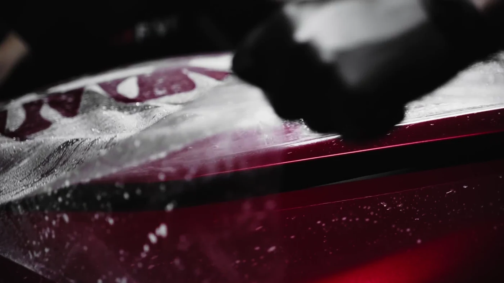
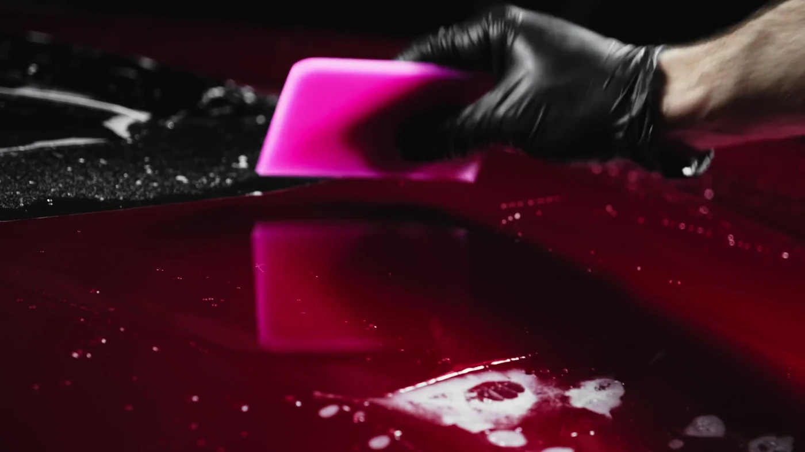
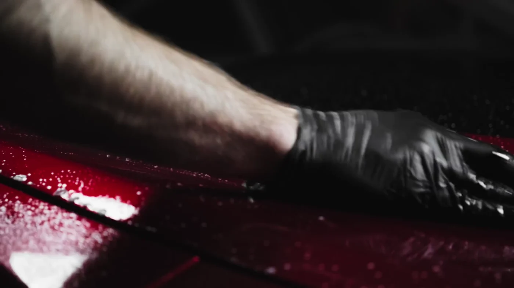

Розкажіть про авто
Яка модель, що турбує та якого результату ви очікуєте.
ДЕТЕЙЛІНГ У СОКІЛЬНИКАХ
Полірування та захист кузова.
Догляд, який видно в деталях.
Від чистого салону до глибокого блиску кузова. У Майстерня Автокраси дбаємо про поверхні, яких ви торкаєтеся щодня, і деталі, на які озираєтеся після паркування.
Поліруємо, очищуємо та наносимо захисні покриття. Потрібну послугу, вартість і час виконання можна уточнити телефоном.
Оберіть, що потрібно вашому авто.
Усе починається з його стану.

01 / КУЗОВДля відновлення блиску та зменшення дрібних подряпин і матовості лаку.
Обрати послугу
02 / ЗАХИСТКераміка та віск для догляду за кузовом і захисту від води та забруднень.
Обрати послугуХімчистка тканинних і шкіряних поверхонь. Догляд за салоном, у якому приємно бути.
Обрати хімчистку 04 / ДОГЛЯДМиття кузова, очищення дисків та арок. Видалення дорожнього бруду й забруднень.
Обрати мийку
Лак. Скло. Шкіра.
Кожна поверхня потребує
свого догляду.
Яка модель, що турбує та якого результату ви очікуєте.
Зателефонуйте, щоб обговорити послугу, її вартість і час візиту.
Сокільники, Львівська область, 81130. Код місця: QXMC+HG. Побудуйте маршрут у картах перед поїздкою.
Оберіть послугу та опишіть побажання.
Для запису зателефонуйте до студії.
Вартість залежить від автомобіля, стану поверхонь і потрібних робіт. Уточніть її у студії за номером +380 67 670 4307.
Полірування допомагає відновити вигляд лаку. Захисне покриття наносять для подальшого догляду за поверхнею. Які роботи потрібні саме вашому авто, варто обговорити зі студією.
Ні. Дані з форми не надсилаються. Щоб узгодити послугу, дату й час, зателефонуйте до студії.